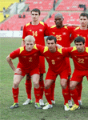
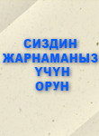

ФУТБОЛ
Футбо́л (англис тилинен foot- бут, ball - топ) — командалык спорт оюну, бул оюндун максаты каршы команданын дарбазасына топ тебип киргизүү(кол менен топко тийген болбойт). Дүйнөдөгү эң популярдуу спорт оюну болуп эсептелинет. Футбол — кеңири таралган спорт оюндарынын бири. Мында оюнчулар эки командага бөлүнүп топту атайын дарбазага тээп кийрүү менен бирин-бири жеңип алууга умтулат. Футбол оюну бүткүл дененин, өзгөчө буттун булчуңдарынын өсүшүнө жардам берет. Жүрөк-кан тамыр жана дем алуу системасын чыңдайт. Мындан сырткары адамды эрктүүлүккө, шамдагайлыкка, чыдамдуулукка тарбиялайт. Футбол топ менен аткарылуучу татаал техникалык кыймыл-аракеттер (чабуул коюу, коргонуу, топту баш менен сүзүү, бут менен тебүү) өзгөчө тыкандыкты талап кылат. Ал денени ар тараптан өнүктүрөт жана ден соолукту чыңдоого жакшы таасир берет. Футбол оюнун көбүнчө жаштар жана балдар ойнойт. Балдардын спорт мектептеринде футболго көнүгүү үчүн 10—12 жаштан кабыл алынат. Өз алдынча футбол оюнун балдар 8—9 жашынан ойносо болот. Алардын оюнун атайын аянтчада (мектеп алдындагы аянт, короолордо, пионер лагерлеринде жана башкалар) уюштуруу керек. Өспүрүмдөрдүн футбол оюну чакан аянтта, чоңдордукуна караганда кыска убакытка, кичирээк топ менен ойнолот. Футбол балдардын ден соолугун чыңдайт, ынтымактуу, тартиптүү болууга тарбиялайт. Футбол менен дайыма машыгууну каалаган балдар мектептеги врачка кайрылып текшерилүүсү зарыл. Мындай балдарга футбол менен машыккандар, спорттук башка көнүгүүлөр (сууда сүзүү, жеңил атлетика жана башкалар) менен да машыгуулары талапка ылайык. Футболдо белгилүү эрежелерди сактоо керектигин эстен чыгарбоо зарыл. Анткени түрдүү травмага учуроо мүмкүн.
Жасаган: © SML Indastry
2014